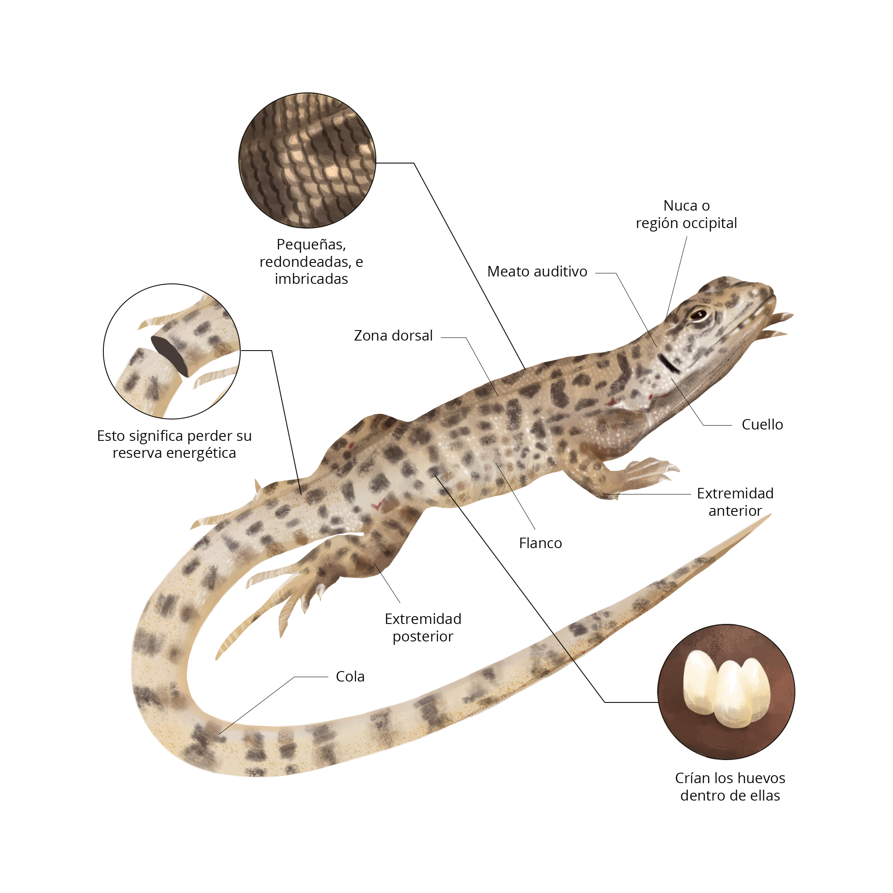

Lo especial de esta Lioalemus es su adaptación o evolución a las condiciones climáticas, por lo que su forma de reproducción es “Ovovivípara”, es decir, los huevos se desarrollan dentro de la hembra y una vez que se abre, las crías emergen listas para adaptarse al medio. Luego en los juveniles las manchas en la zona vertebral son más acentuadas que en los adultos.
Este lagarto en peligro de extinción, cuenta con escamas pequeñas y redondeadas a lo largo de todo su cuerpo. Por las escamas su piel tiende a ser seca, su termorregulación es endotérmica, es decir que depende del sol. Su sistema excretor se encuetra debajo del inicio de su cola, excretan ácido úrico. Como método de defensa a veces desprenden su cola, método característico de la especie, donde contraen fuerte el músculo y rompen la vértebra.
Para protegerse el lagarto leopardo cava su propia guarida en el suelo, aunque otras veces puede usar las guaridas de otros animales. Lugar en el que hiberna durante invierno. Cuando sale y se encuentra en peligro, usualmente huye hacia una zona rocosa para adoptar una postura inmóvil y camuflarse, si es atrapado, es capaz de desprender su cola y escapar. Los depredadores más conocidos del lagarto leopardo son las serpientes, el coyote, el zorro kit, el tejón y algunas aves.
¿Por qué leopardo? Es simple, ya que al igual que el felino, este lagarto posee unas distintivas manchas en su cuerpo. En Chile se encuentran otras especies con patrones de manchas similares, que conforman un pequeño grupo de «Lagartos Leopardos», todos con dietas similares, más grandes o pequeños, pero este mide 9,5 cm de largo.
Insecto volador perteneciente a la familia Muscidae, tienen un alto nivel de proteínas.
Perteneciente a la familia Libelluloidea, este insecto aporta un alto nivel de proteínas.
Destacado en su alto nivel nutricional de aminoácidos, de la familia Scarabaeidae.
Son fuente de minerales, escasas en altura, por ejemplo la Añañuca y la Candrinia.